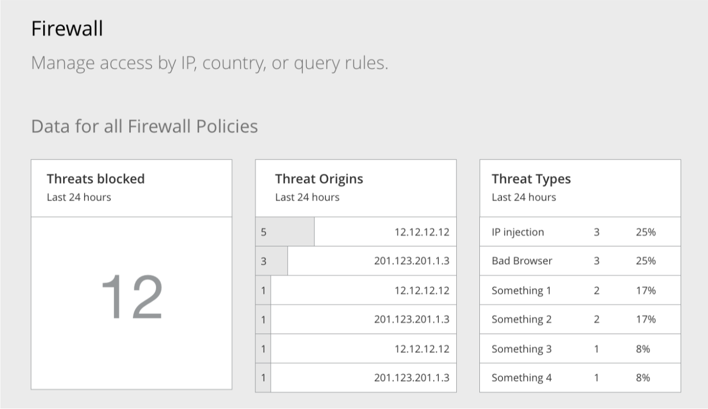

Cloudflare Firewall app
2016 - 2019
Firewall is a key application of Cloudflare but for a long time access and usage of the more powerful parts of the app wasn't as accessible or easy to for most of Cloudflare's customer base. Ever for those enterprise teams who had the people and expertise to set up Cloudflare custom Firewall, it was not an easy process. The goal here was to update and simplify custom firewall across all customer types from enterprise to free customers.
back to the top
back to portfolio
01. Problem
One of the main driving purpose for the founders or Cloudflare to create Cloudflare was that they were tired of spam emails and wanted to build something
that would be able to intercept and prevent this unwanted traffic.
Cloudflare basic firewall is super easy to use and set up. And this works
great as long as you stay within the confines of the presets. Once you start with wanting to have more control and precision with your firewall the first
thing you must overcome is where to even start.
The starting point of the WAF (Web application Firewall) was just a box that said, "Please contact our team." To get set up, the Cloudflare team would have to set up your custom WAF rules internally for you. And if you wanted to make any changes to those rules? You'd have to contact our team again.

Even just looking at the traffic to the Firewall page, you could see that (labeled: None) our internal team working with customers to build their custom rules was a good chunk of the traffic to the Firewall page.
02. Research
We wanted to see how we can give back control to the users so that they could create and manage their own custom firewall rules.
We looked at all different types and shapes of rule builders. From operating specific tools to 3rd party extentions. Trying to understand the fundamental components and what made sense.
Some were very complex and other were overly visual. Understanding the key functions that had to be there was vitial to deciding where Cloudflare's custom WAF rule build would sit. On one end we wanted to make it easy for even beginners to use, but without missing features for highly technical users who would want precise control via a DSL (Domain specific language).
A good place where I started was sitting down with some of those internal sales-engineers who worked with our key customers building those
custom rules in the first place. Getting a scope of how our firewall works and what levels of customization really help me grasp the complexity
and range where the solution needs to come from.
Fun fact, after I created this flow chart to understand our firewall flow, the sales engineer I worked with requested the chart to use to explain
our firewall product to enterprise customers.
03. Analysis
Once I had a fundamental understand of how the firewall worked and differet approaches to rule builders it was time to see what fits.
We needed to start with an overall flow to understand the different UI we might need to build to allow basic CRUD (create, read, update, and destroy) processes.

I broke down the basic components we'll want to have for the visual part of rule builder. Setting up an action based on triggers. The triggers can be additive or subtrative. Depending on the type of operand that was used.

By understanding the range of possible types of customizations, we played an assortment of possible options for each section of filter functions. We also experimented with a concept of drag-and-drop to visually re-order rules (a common request when customers were looking to update rules)
04. Testing
Part of the team I was working with was in the London office, I brought some paper prototypes and worked with the engineers and sales team to see how they might interpret customer wants and needs. We worked on various UI components that could give more feedback on existing firewall rules and their effectiveness. Along with a very rudimentary rule builder that allowed jumping between the visual rule builder and a dedicated DSL view.

Working with the PM Alex, we arranged and ordered customer pains and priorities to help us focus in on what we can accomplish for a round one. And which features should be set as a fast follow up in the next update.
05. Design
Morbi in sem quis dui placerat ornare. Pellentesque odio nisi euismod in pharetra a ultricies in diam. Sed arcu. Cras consequat.

The design that we launched was a more simplified rule builder. We decided to cut the drag-and-drop feature to reorder the conditionals in favor of launching with something more basic.

To test out interactions for the rule builder, I created simple HTML prototypes for different variations. Check out a simplified prototype in my side-project section.
Along with the updated WAF rule builder we created some additional feedback and data points for the user to see the results of the firewall.
As well as additional features like rate-limited notification and a event log to see which rules were being triggered.
06. Results
We were able to attain some pretty interesting results that would be able for us to further refine the Custom firewall into the future.

We had some users try out the advanced DSL expression editor we created for professionals who wanted to code their own firewall rules. As expected there weren't as many customers who went down this route, but the ones who did, almost all ended up completing the rule creation via the expression editor.
We had a good number of users try out and create rules with about 60% of users completing the flow. I think this would be a great area to dig into a bit deeper to understand where customers were getting stuck or just trying out the new feature. The next goal here would be to improve the conversion rate.

Another good sign was the number of support tickets created specifically around Firewall and Customer Firewall rules. The number of tickets went up upon launch of the new feature but quickly dropped once the inital round of customers got use to using and creating their own custom rules.

Design of the marketing component for custom Firewall rules on launch day.